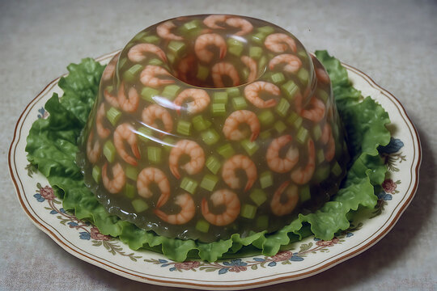

Shrimp Salad Supreme
Phylis Fisher, beloved grandmother, and active member of the Ladies' Aid organization of the Evangelical Lutheran Church of New Ulm, created the shrimp salad supreme. This delicious dish combines fresh canned shrimp, crisp vegetables, and a tangy dressing to create a meal that is both satisfying and inspiring. Just like Julia's vision for Mankato, this recipe brings together diverse ingredients to create something greater than the sum of its parts. Stay tuned for the full recipe and how it connects to Julia's campaign!
- 1 pkg. lemon Jello
- 1 cup boiling water
- 1/2 cup whipped cream
- 1/2 cup mayonnaise
- 3 oz package cream cheese
- 3 hard boiled eggs, chopped
- 1 1/2 cup chopped celery
- 1 tbsp. chopped green pepper
- 3 tbsp. chopped onion
- 1 can shrimp, drained
- 1 tsp. salt

Mix the lemon Jello with the boiling water. Let stand until it congeals. Mix together the whipped cream, mayonnaise, and cream cheese. Whip Jello and add the second mixture; also add the eggs, celery, green pepper, onion, shrimp, and salt with a few chopped stuffed olives. Mix and put into mold. Chill until firm. Unmold garnish with lettuce and top with chopped olives.